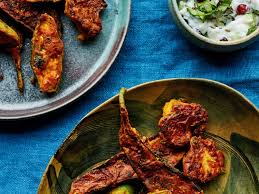

Taruwa Recipe

Ingredients:
- 500g tarul (taro root), peeled and diced
- 1 large onion, finely chopped
- 2 tomatoes, chopped
- 3-4 cloves garlic, minced
- 1-inch ginger, grated
- 2 green chilies, slit
- 1 teaspoon cumin seeds
- 1 teaspoon mustard seeds
- 1/2 teaspoon turmeric powder
- 1 teaspoon coriander powder
- 1/2 teaspoon red chili powder (adjust to taste)
- 1/2 teaspoon garam masala
- Salt to taste
- 2 tablespoons cooking oil
- Fresh coriander leaves for garnish
Procedures:
- Heat oil in a pan over medium heat. Add cumin seeds and mustard seeds.
- Once the seeds start to splutter, add chopped onions and sauté until they turn golden brown.
- Add minced garlic, grated ginger, and slit green chilies. Sauté for another couple of minutes.
- Now, add chopped tomatoes and cook until they turn soft and mushy.
- Add turmeric powder, coriander powder, red chili powder, and salt. Mix well and cook for a minute.
- Add diced tarul (taro root) to the pan and mix until the masala coats the tarul pieces evenly.
- Cover the pan and cook the tarul over low heat until they are tender, stirring occasionally. It may take around 15-20 minutes.
- Once the tarul is cooked, sprinkle garam masala and garnish with fresh coriander leaves.
- Remove from heat and serve hot with steamed rice or roti. Enjoy your delicious Tarul Curry!